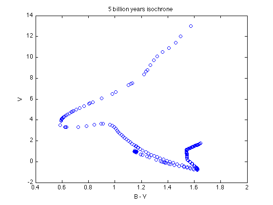
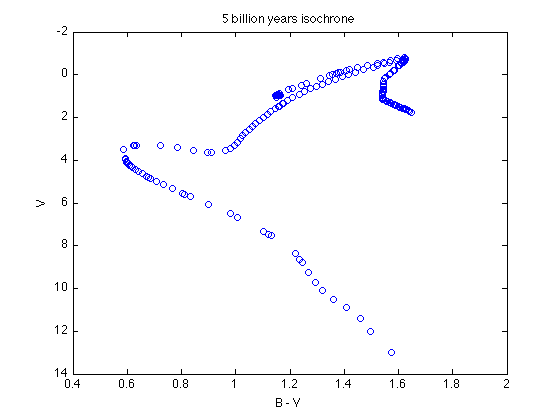
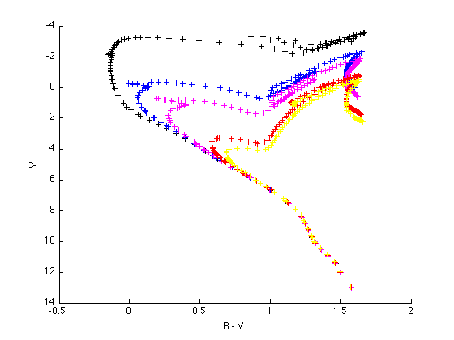
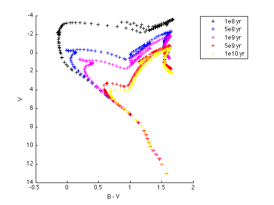

Plotting the isochrones
First, issue the command
load isochrones.mat
to load the isochrones. In your workspace, you will see that a new variable, a 1x1 struct, called isoc exists. Give the command
isoc
isoc =
e8: [1x1 struct]
e9: [1x1 struct]
tells you that isoc is composed of two more structs called e8 and e9. Now try
isoc.e8
ans =
one: [1x1 struct]
two: [1x1 struct]
three: [1x1 struct]
four: [1x1 struct]
five: [1x1 struct]
six: [1x1 struct]
seven: [1x1 struct]
eight: [1x1 struct]
nine: [1x1 struct]
and you'll see that isoc.e8 is further composed of 9 more structs, called one, two, and so on. Now look at
isoc.e8.one
ans =
B: [132x1 double]
V: [132x1 double]
logage: [132x1 double]
which is composed of 3 arrays of double precision numbers, containing the B magnitudes and V magnitudes of every star in the model, and the log10 of the age of the stars in years.
Remember, these isochrones are named to make clear what age each isochrone represents. Calling it isoc reminds you that these are isochrones. Breaking it into e8 and e9 is to separate the isochrones for hundreds of millions of years (hence e8) from the billions of years (e9). Then isoc.e8 and isoc.e9 are further broken down, separating each isochrone from each other. Thus isoc.e8.one represents the data necessary for the 100 millions years isochrone, while isoc.e9.ten represents the 10 billion years isochrone. You'll also notice names like isoc.e9.sevenpt5, which represents 7.5 billion years.
Let's plot isoc.e9.five as an example. For HR diagram, we'll be plotting V (y-axis) vs. B-V (x-axis):
figure(1); clf; plot(isoc.e9.five.B - isoc.e9.five.V, isoc.e9.five.V, 'bo') xlabel('B - V') ylabel('V') title('5 billion years isochrone')
Remember that the magnitude system is backwards
set(gca, 'YDir', 'reverse')
You may want to overplot several isochrones in one figure to see the difference. Here's an example:
figure(2); clf; hold on; set(gca, 'YDir', 'reverse'); plot( isoc.e8.one.B - isoc.e8.one.V, isoc.e8.one.V, 'k+') plot(isoc.e8.five.B - isoc.e8.five.V, isoc.e8.five.V, 'b+') plot( isoc.e9.one.B - isoc.e9.one.V, isoc.e9.one.V, 'm+') plot(isoc.e9.five.B - isoc.e9.five.V, isoc.e9.five.V, 'r+') plot( isoc.e9.ten.B - isoc.e9.ten.V, isoc.e9.ten.V, 'y+') xlabel('B - V') ylabel('V')
Don't forget to add the graph legend:
legend('1e8 yr', '5e8 yr', '1e9 yr', '5e9 yr', '1e10 yr', 'Location', 'NorthEastOutside');